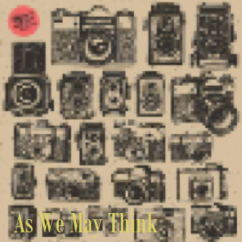

Women dream of being dreamt of
|
Assignment One: As We May Think
I went into this article not knowing what to expect, and so was initially
|
|
|  |
| Assignment Two: Women | |
| |
|
| Men dream of women Women dream of being dreamt of |
 |
Behind every glance is a judgement
Sometimes the glance they meet is their own reflected back from a real mirror |
|
|
A nude is seen as an
Object |
||
 |
Women constantly meet glances which act like
mirrors reminding them of how they look or should look |
|
She cannot avoid
envisaging herself walking or weeping. |
|
How she appears to others and particularly how she appears to men is of crucial importance |